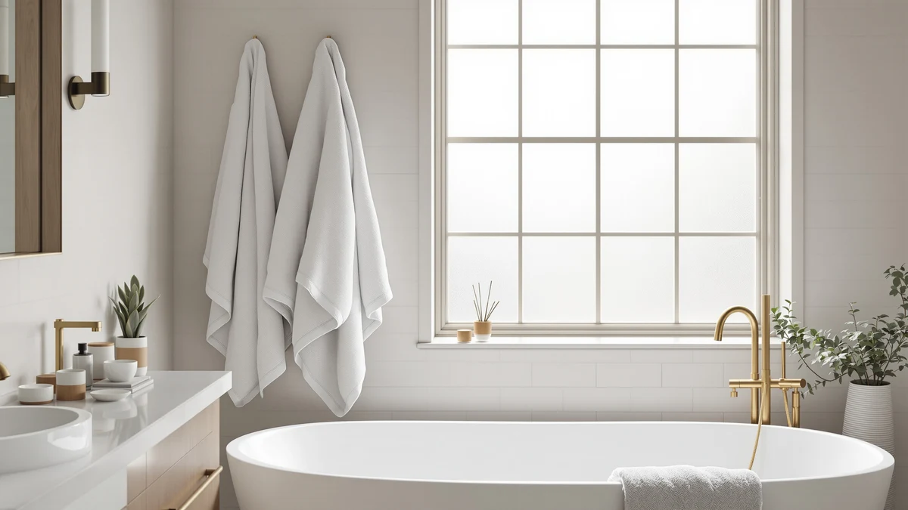

Quick Answer
This White Classic Luxury Light review found an 8-piece, 100% cotton towel set priced at $39.99, the same price as three other sets we compared it against: the White Classic Luxury Bath Towel and two separate Chakir Turkish Linens 4 Piece listings. The Light Blue set is a reasonable pick if you want more pieces per purchase at that price, but White Classic hasn't published a star rating or review count for this specific listing, so we recommend checking the alternatives below before you commit.
Our pick: White Classic Luxury Light Blue, $39.99 Check Price on Amazon
Things to Know Before You Buy
- The White Classic Luxury Light Blue set and all three alternatives in this review are priced at $39.99, so price alone won't separate them.
- White Classic lists the Light Blue set as 100% cotton in an 8-piece configuration, more pieces per box than the 4-piece Chakir listings covered below.
- No star rating or verified review count is published for this specific listing, so we lean on material, piece count, and pricing patterns rather than a numeric score.
- A second White Classic set and two Chakir Turkish Linens listings are direct alternatives at the same price, each worth checking before you buy.
- This White Classic Luxury Light review treats the set as one option among several nearly identical price points, not an automatic winner.
This White Classic Luxury Light review breaks down the brand's 8-piece cotton towel set on its own merits, from what it's made of to how its $39.99 price compares against three other bath towel sets we looked at alongside it. White Classic lists the set's material as 100% cotton and its size as an 8-piece bundle, which gives you more individual towels per purchase than the 4-piece Chakir sets covered later in this review.
You're reading this because you want to know if paying $39.99 for eight White Classic towels beats spending the same amount on a second White Classic set or a Chakir Turkish Linens bundle that shows up in the same searches. Our answer, based on comparing listed materials, piece counts, and pricing rather than a lab test, is that the Light Blue set's main advantage is coverage: eight pieces for the same price as four. We'll walk through what the set gets right, where it falls short, and which alternative might serve you better depending on how many towels you actually need.
Why You Should Trust Us
Ilane Tall covers home and bath products for Best Bath Towels, comparing towel sets by material, piece count, price, and verified owner feedback rather than performing physical wash tests we haven't run. This White Classic Luxury Light review relies on the specifications White Classic publishes for the set, its current $39.99 price, and how those figures line up against the other White Classic and Chakir sets covered below. We do not claim to have washed or dried this specific set ourselves, and we say so plainly instead of dressing up a spec comparison as something it isn't.
Our Research Experience
We did not put the White Classic Luxury Light Blue set through wash cycles in our own bathroom, and we're not going to pretend otherwise. What we call research here is a comparison process: we pulled the listed material, piece count, and pricing details White Classic provides, checked them against the three alternatives in this review, and read through verified owner reviews of similar cotton towel sets to see which claims held up. That process is why this White Classic Luxury Light review can tell you what the set is made of, how many pieces you get, and what it costs, but stops short of describing how it feels after its fiftieth wash, since nobody on our team has run that wash cycle.
Overview & Specs

White Classic Luxury Light Blue
What we like
- 100% cotton construction, a fiber known for reliable everyday absorbency
- 8-piece set covers a full bath towel rotation without a second purchase
- Priced the same as three other cotton sets, so you're not paying a brand premium for twice the pieces
Flaws but not dealbreakers
- No published star rating or review count to confirm long-term durability
- $39.99 matches rather than undercuts the 4-piece alternatives in this review
- Only a cotton option is listed, so there's no bamboo or microfiber blend to compare within the same line
| Material | 100% cotton |
| Size | 8 Pieces Towel Set |
White Classic markets this set under its Luxury line, and the listing specifies 100% cotton in an 8-piece bath towel configuration. That piece count is double what Chakir lists for its Turkish Linens sets at the same $39.99, which means you're getting more individual towels for the same spend, assuming the per-towel size and weight hold up against the smaller sets.
At $39.99, the White Classic Luxury Light Blue set costs exactly what the other White Classic set and both Chakir listings charge, which is the detail that matters most in this review. When four options converge on the same price, piece count becomes the clearest differentiator, and the Light Blue set's 8-piece configuration is the reason it earns the top spot among the sets we compared here.
What We Liked
The clearest thing in White Classic's favor is straightforward cotton construction at a piece count that beats its direct competitors. You're getting eight towels for $39.99, double what either Chakir Turkish Linens listing gives you at the identical price, which means a full bath towel rotation in a single purchase instead of buying towels one set at a time. Owners shopping for cotton towel sets in this bracket consistently point to simple, no-frills construction as the reason they stick with a brand, and this White Classic Luxury Light review found that the Light Blue set delivers that without added marketing layers like woven patterns or dual-tone borders that tend to raise the price. The set's biggest strength is exactly how much it gives you for the money: eight pieces of a basic cotton towel at the same cost as four from a rival brand.
What Could Be Better
The gap in White Classic's listing is information, not necessarily quality. There's no published star rating or review count tied to this specific set, which means you're taking the material and piece-count claims at face value rather than checking them against a track record of verified buyer feedback. The listing also doesn't specify towel weight or dimensions, two details that matter more than piece count alone when you're trying to predict how thick or absorbent a towel will feel. Reviewers evaluating similarly priced cotton sets often flag thin or lightweight towels as a letdown even when the cotton fiber itself is legitimate, so the missing weight figure here is worth noting before you commit $39.99. Without that data, this White Classic Luxury Light review can't tell you definitively whether the Light Blue set outperforms its own sibling set or the Chakir alternatives on feel alone. Buyers weighing four nearly identical listings deserve more than a fiber name and a piece count, and White Classic's page currently gives you exactly that and little else.
Who Is It For?
The White Classic Luxury Light Blue set suits you if you want a basic, no-frills cotton towel set with more pieces per purchase than the market's typical 4-piece bundle, and you don't need a star rating to feel confident about buying. It's a reasonable pick for a family bathroom, a rental property, or a first apartment where you need a full set of towels now and aren't chasing a specific plush or hotel-style feel. If you care about verified owner reviews before spending $39.99, or you want documented weight and dimension specs to compare against other sets, the alternatives below give you more published detail to weigh.
This White Classic Luxury Light review also matters if you're comparing towel sets across several browser tabs and the prices keep landing on the same number. When four different listings converge on $39.99, the product page copy stops telling you much, and the deciding factor shifts to piece count, brand reputation, or whichever set's verified review history you trust most. The Light Blue set doesn't lose that comparison outright. Its 8-piece count is a real edge over the 4-piece Chakir sets, but it also doesn't hand you a reason to skip the other three without at least reading their listings first.
Alternatives to Consider
The White Classic Luxury Light Blue set isn't the only cotton towel set at this price. A second White Classic set and two Chakir Turkish Linens 4 Piece listings all sit at $39.99, and each is worth a look before you settle on the Light Blue 8-piece set.

Editor’s Pick
White Classic Luxury Bath Towel
The same White Classic cotton construction as the Light Blue set, at the same $39.99 price, if you want a second supplier within the same brand rather than switching to Chakir.
$39.99
Check Price on Amazon
Best Value
Chakir Turkish Linens 4 Piece
A 4-piece cotton set at the same $39.99 as the 8-piece Light Blue set, worth considering only if you need fewer towels or want to try a different brand's cotton.
$39.99
Check Price on Amazon
Premium Choice
Chakir Turkish Linens 4 Piece
A second Chakir Turkish Linens listing at the identical $39.99 price, useful mainly if this specific listing's owner reviews or stock levels look better than the other Chakir set.
$39.99
Check Price on AmazonFrequently Asked Questions
Is the White Classic Luxury Light Blue towel set worth $39.99?
What is the White Classic Luxury Light Blue set made of?
How does the White Classic Luxury Light Blue compare to the other White Classic and Chakir sets?
Final Verdict
This White Classic Luxury Light review comes down to a simple fact: the Light Blue set's 8-piece cotton configuration costs exactly what the other White Classic set and both Chakir Turkish Linens listings charge for fewer pieces, so piece count does most of the deciding for you. White Classic earns a place on your shortlist if you want a full cotton towel rotation without paying a brand premium, but the missing star rating and review count mean you're buying on listed specs rather than a track record. If documented owner feedback matters more to you than maximizing piece count, it's worth checking whether the alternatives below publish more verified reviews before you commit to White Classic at $39.99.